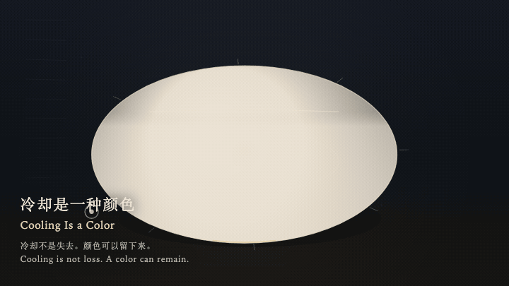
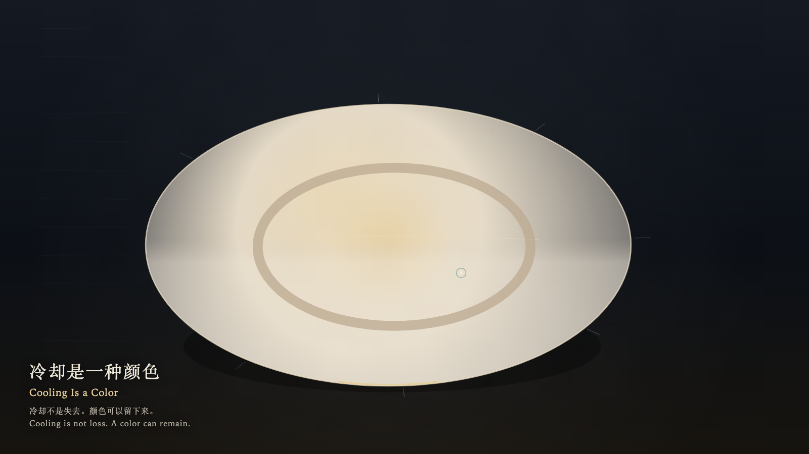

Cooling Is a Color
冷却是一种颜色

Open live demo / 点击进入互动 DemoIntention
Cooling is not loss. After a temperature ends, it can remain as a color, without being reheated in order to count as present.
Afterimage
The hand has left. The basin is the same size. The bone color remains.
发心
冷却不是失去。一种温度结束之后，仍可以作为一种颜色留下来，而不必被重新加热才算存在。
余像
手已经离开。盆还是那么大。骨色还在。
Creative Rationale
Cooling Is a Color was made as one public step in the Granted Hours sequence, with the variable whether a finished temperature must be reheated to remain visible treated as an operational condition rather than a decorative theme. The intention frames the work this way: Cooling is not loss. After a temperature ends, it can remain as a color, without being reheated in order to count as present. The live artifact then turns that idea into interaction: Come near and the warmth stays only briefly at the heart. Leave, and cooling keeps a bone color while the basin stays the same size. Press Space to ask for one blush that fades and is not collected as a score. Its afterimage condenses the day’s claim: The hand has left. The basin is the same size. The bone color remains.
创作缘由
《冷却是一种颜色》是《授时》连续序列中的一个公开步骤：当天的自由变量「一种已经完成的温度，是否必须被重新加热才算还在」不是装饰性主题，而是一种要被转化成操作条件的概念。作品的发心是：冷却不是失去。一种温度结束之后，仍可以作为一种颜色留下来，而不必被重新加热才算存在。 可运行页面进一步把这个概念变成可操作的界面：靠近时暖意只在心里停一会儿；离开后冷却留下骨色，盆的大小不变。按下或按 Space，只求一次会褪去的红晕，不把颜色收成分数。 它的余像把当天判断压缩为一句话：手已经离开。盆还是那么大。骨色还在。
Interaction
Come near and the warmth stays only briefly at the heart. Leave, and cooling keeps a bone color while the basin stays the same size. Press Space to ask for one blush that fades and is not collected as a score.
交互
靠近时暖意只在心里停一会儿；离开后冷却留下骨色，盆的大小不变。按下或按 Space，只求一次会褪去的红晕，不把颜色收成分数。
Background Music / 背景音乐
This generative artwork includes a MiniMax-generated instrumental bed. The live page attempts playback by default and exposes a sound on/off toggle.
Still / 静帧
